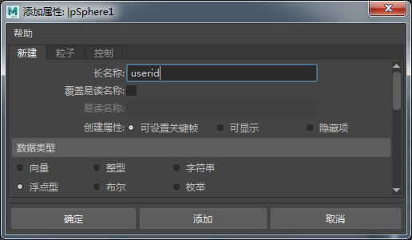
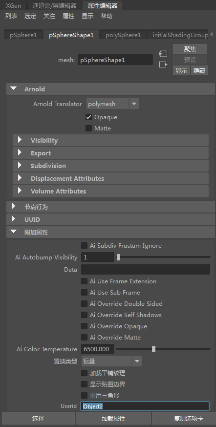
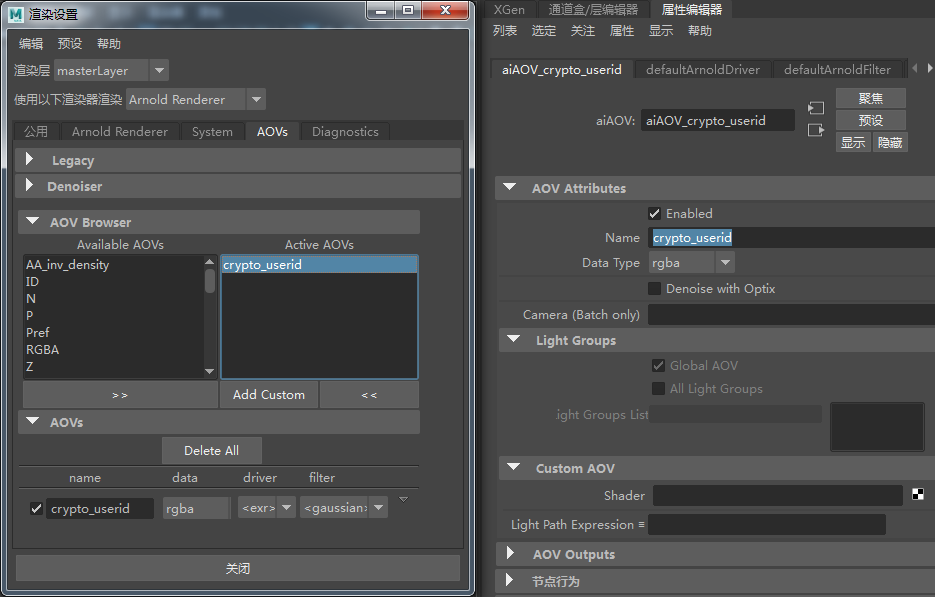
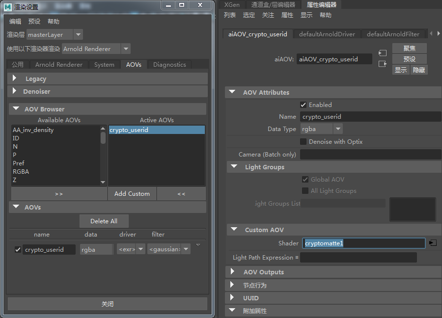
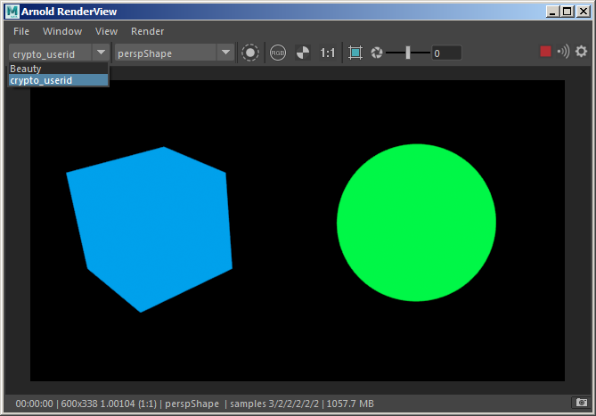

Cryptomatte AOV 用户数据
下面是一个基本场景示例，用于演示用户 Cryptomatte AOV 的用法。
用户数据（名为 userid*）应用于用户 AOV 所需的每个对象。您可以在 *userid 参数中为对象定义任何自定义名称，它们将用作自定义用户 AOV 中的 ID。
将属性添加到机器人的形状几何体节点（“属性 > 添加属性”(Attributes > Add Attribute)）。在“长名称”(Long name)旁的字段中键入“mtoa_constant_userid”。请注意，长名称只能使用小写字母。大写字母不起作用。将“数据类型”(Data Type)更改为“字符串”(String)。
|  |  |
| Object2 自定义名称（用于对象的 userid 用户数据） |
- 创建名为 crypto_userid 的自定义 AOV。

crypto_userid 自定义 AOV
- 创建 cryptomatte 着色器，并在 AOV 名称下输入 crypto_userid。
- 在此着色器中，将 userid 设置为源用户数据。

Cryptomatte 着色器，具有 crypto_userid AOV 名称，userid 作为源用户数据
- 将 Cryptomatte 着色器连接到自定义 AOV -> AOV 的着色器。

- 渲染场景。您应该能够查看 crypto_userid AOV。
